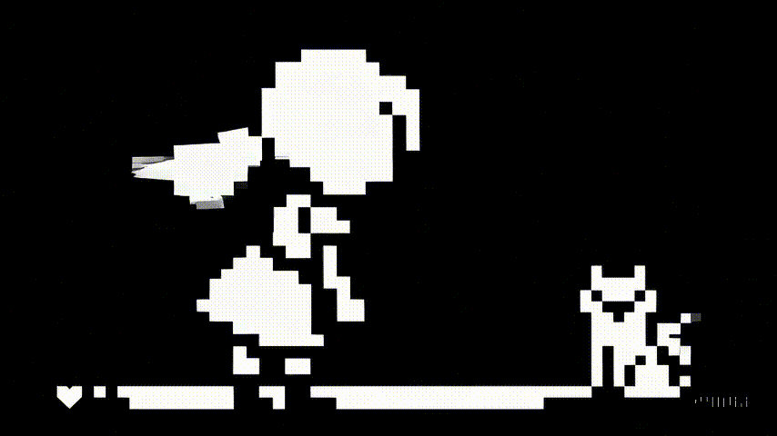
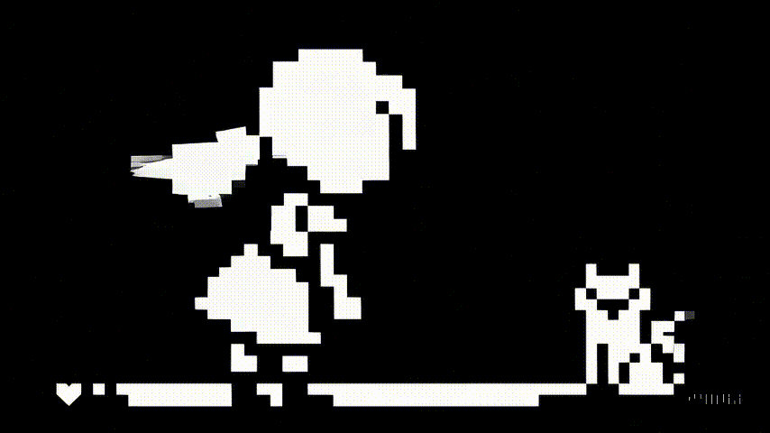

Этот мини-проект предлагает взглянуть на Москву глазами архитекторов-авангардистов.
Тебе предстоит пройти несколько точек маршрута и выбрать принципы, по которым должен строиться новый город.
Каждый выбор открывает исторический контекст и идеи эпохи.
 
